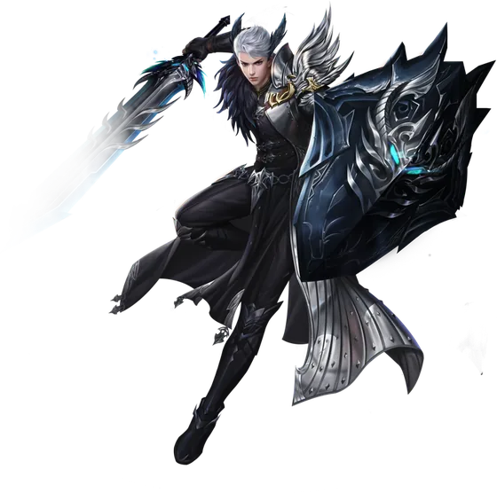

Saga do Herói: Paladino
A mais longa de todas em número de missões — cinquenta e duas — e a única que se passa quase inteira dentro do Inferno antigo. Tem quatro duelos seguidos contra o próprio Tian Yi e cinco baús de pista.

O que você ganha
Ovo de Mini Tian Yi — um mascote cosmético, que só aparece depois de ser adicionado ao Códice.
Título: Os verdadeiros heróis! — +100 de HP, e colorido.
Os dois saem do baú brilhante no canto inferior direito do retrato, dentro da janela da Saga do Herói. Uma vez só por personagem.
Antes de começar
A saga pede nível 80 de pico histórico e cultivo Mahayana. E vale esperar: a experiência das missões escala até o nível 100 e para de crescer ali, então fazer antes disso é jogar fora boa parte do que a saga paga.
Como abrir
Abra a Saga do Herói, clique no Paladino e fale com Goh, o Velho Contador, na Cidade do Dragão Leste, em 585,641.
O que costuma travar
Saiu do modo história? A porta de volta é o Goh. Falar com ele em 585,641(21) é o único jeito de reentrar no Inferno antigo, e isso vale para a saga toda.
Nos quatro duelos, o Tian Yi bate muito. Em Espada Comum, Segunda Arma, Terceira Arma e Espada e Escudo ele ataca você de verdade — se demorar, morre. Falhando, pegue de novo no Mestre Artesão.
**Em Coletando Pistas é preciso ter espaço no inventário.** O mapa com a pista vai para lá; se não aparecer, cancele e pegue de novo.
No mapa dos Paredões não dá para voar — montaria sim.
**O Treinamento diário tem 30 minutos.** Falhando, saia do mapa e entre no Inferno antigo outra vez.
As 52 missões, em ordem
- O Jovem Paladino — fale com Goh, o Velho Contador, em
585,641. - As coisas nas histórias — fale com Goh. Depois da história você vai para
155,834, na Cidade de Arcádia do Inferno: confirme o popup e fale com Tian Yi em157,832. - Familiar e Estranho — fale com Tian Yi.
- As pessoas da história — fale com Tian Yi.
- Tirar a pipa — cave a pipa em
157,832(19), no alto, em cima da asa da estátua, e fale com Ying Xin em157,832. - Evite as abelhas — vá a
163,828. As abelhas machucam; com pouco HP, cuidado. - Fugir das Abelhas — vá a
172,824. - Primeiro encontro — fale com Tian Yi, ali perto.
- Os sete filhos despedaçados — fale com Ying Xin perto de
173,824e depois com Tian Yi. - Ajuda a caminho — fale com Chong Guang e depois com Ying Xin.
- Treinamento diário — fale com Tian Yi. São 30 minutos.
- Procurando Paredões — vá a
157,823e encontre Tian Yi em155,816(29). - Trilha suspeita — fale com Tian Yi e vá até a Flor de Pessegueiro.
- Salvando a Flor de Pêssego — fale com a Flor de Pessegueiro.
- Recompensa Inesperada — fale com Tian Yi, cave o Pedaço de Ferro em
163,806, fale com ele e procure Ying Xin perto de163,809. - A Cauda Inabalável — fale com Ying Xin e encontre o Mestre Artesão em
168,817— aqui já dá para voar. - Condições do Artesão — fale com o Artesão. Depois saia do Inferno antigo e vá à DG 89 God, na Terra dos Imortais.
- Derrotando Brahma — mate Brahma na Terra dos Imortais.
- Desejo de Vida — fale com o Espírito de Brahma, que só aparece depois do boss morto, e espere 10 segundos.
- Voo em dupla — fale com o Fogo Demoníaco.
- O Último Sacrifício — fale com Ying Xin, cave a Lâmina Partida perto de
384,591, volte ao Inferno antigo pelo Goh e fale com o Mestre Artesão. - Cumprimento da Promessa — fale com o Mestre Artesão e espere 10 segundos.
- Espada Comum — fale com o Artesão. Tian Yi ataca: derrote-o e volte a falar com o Artesão.
- Segunda Arma — fale com o Artesão, derrote Tian Yi de novo e volte a ele.
- Terceira Arma — fale com o Artesão, derrote Tian Yi e volte a ele.
- Espada e Escudo — fale com o Artesão e derrote Tian Yi.
- Renascimento — fale com o Artesão.
- Sorte Inesperada — vá a
150,802, mate Maléfico Terral até largar o Pergaminho de Habilidade e fale com Tian Yi. - Pergaminho Secreto — fale com Tian Yi e vá à Biblioteca, em
123,802. - Emprestando Livros — fale com a Biblioteca e espere.
- Memória Extraordinária — fale com a Biblioteca e encontre Chong Guang em
174,824. - Acumulo de Experiência — fale com Chong Guang e encontre Shen Tulie em
158,828. - Coletando Pistas — fale com Shen Tulie. O mapa com a primeira pista vai para o inventário — precisa de espaço.
- Encontrando Pistas — clique no mapa, vá a
146,768e cave o baú que aparece. - Primeira Pista — fale com Tian Yi; a próxima pista chega ao inventário.
- Encontrando Pistas (2) — clique no mapa, vá a
126,784e cave o baú. - Segunda Pista — fale com Ying Xin; a próxima pista chega ao inventário.
- Encontrando Pistas (3) — clique no mapa, vá a
140,806e cave o baú. - Terceira Pista — fale com Ying Xin.
- Encontrando Pistas (4) — clique no mapa, vá a
123,823e cave o baú. - Quarta Pista — fale com Ying Xin.
- Encontrando Pistas (5) — clique no mapa, vá a
113,806e cave o baú. - A Verdade — fale com a Flor de Pessegueiro perto de
114,807e depois com Shen Tulie. - Mensagem do Amor — fale com Shen Tulie.
- Abrindo a Carta — abra a Carta no inventário.
- Chamado do Senhor Demônio — fale com Shen e encontre o Lorde dos Demônios em
160,837. - Prova do Senhor Demônio — fale com o Lorde e depois com Tian Yi.
- Voltar a Vila — vá a
172,825. - Preparação para Altar — fale com Chong Guang e espere.
- Explorando o Templo — fale com Shen Tulie, veja a cena e fale com Ying Xin.
- Fama ao redor do mundo — depois dos diálogos, fale com o Jovem dos Alados.
- Um despertar de Sonhos — fale com Goh, o Velho Contador de histórias.
Parabéns! Você terminou a Saga do Herói do Paladino.
Volte à janela da Saga do Herói, abra o retrato de Tian Yi e clique no baú para pegar Ovo de Mini Tian Yi e o título Os verdadeiros heróis!, que vale +100 de HP.
Esta é a página mais fraca das dezessete, e a razão está escrita. As duas fontes em português trazem o mesmo texto e o mesmo aviso — saiu do servidor de testes da Level Up durante a expansão — e a PWpedia, que é a fonte em inglês, não tem o Paladino. Ou seja: é uma fonte só, e de teste. Se você fez e viu diferente, conte no Discord.
Conferido contra a Wiki PW, o Trivia PW e a PWpedia. Achou um passo diferente no jogo? Conte no Discord que a gente corrige.